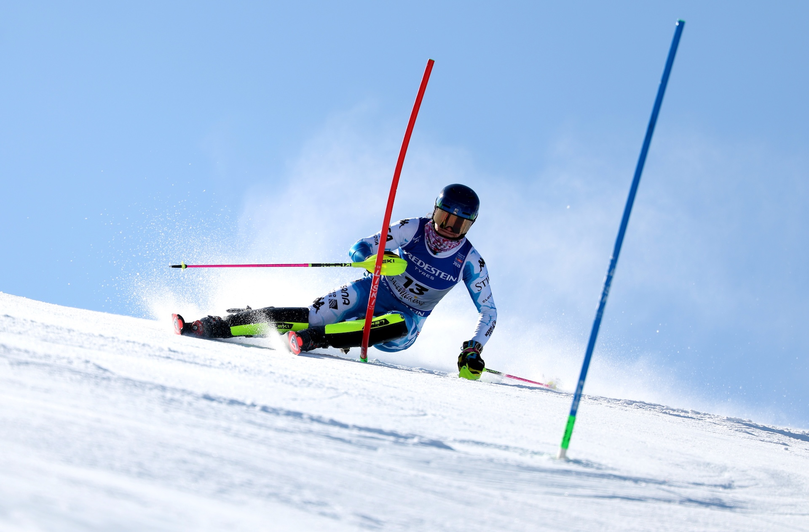
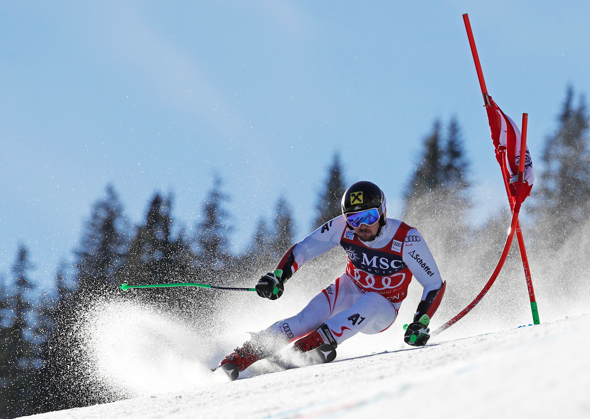
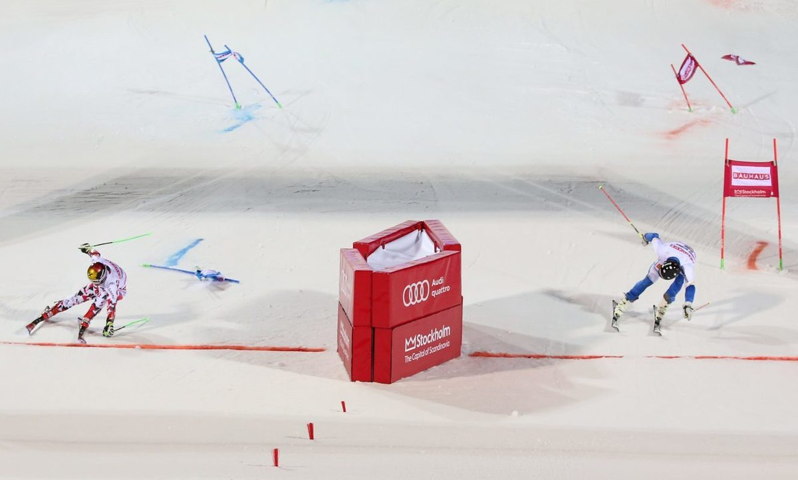

ALLE DISIPLINENE
SLALOM

Slalåm er den mest tekniske grenen i alpint. Løperne kjører gjennom mange porter som står tett sammen, noe som krever raske svinger og god kontroll. Konkurransen består vanligvis av to omganger, og den laveste sammenlagte tiden vinner. Slalåm stiller store krav til balanse, reaksjonsevne og presisjon. Små feil kan koste verdifull tid eller føre til diskvalifikasjon.
STORSLALOM

Storslalåm er en alpindisiplin som kombinerer fart og teknikk. Portene står lenger fra hverandre enn i slalåm, slik at løperne kan holde høyere fart. Konkurransen kjøres vanligvis over to omganger, og tiden legges sammen. Utøverne må ha god balanse, styrke og kontroll for å kjøre raskt gjennom løypa. Mange ser på storslalåm som en allsidig alpindisiplin.
SUPER-G

Super-G er en fartsgren der løperne kjører gjennom en løype med få og brede svinger. Hastigheten er høyere enn i storslalåm, men lavere enn i utfor. Konkurransen avgjøres i én omgang, og løperne får vanligvis bare inspisere løypa på forhånd. Super-G krever både tekniske ferdigheter og evnen til å håndtere høy fart gjennom utfordrende terreng.
UTFOR

Utfor er den raskeste alpindisiplinen. Løperne kjører ned lange og bratte løyper med høy fart, store hopp og krevende svinger. Hastigheten kan komme opp i over 130 kilometer i timen. Konkurransen avgjøres i én omgang, og den raskeste tiden vinner. Utfor krever mot, styrke og konsentrasjon, samtidig som sikkerhet er svært viktig på grunn av de høye hastighetene.
PARALLELLSLALOM

Parallellslalåm er en konkurranse der to løpere kjører side om side i hver sin løype. Den som kommer først i mål, går videre til neste runde. Løypene er korte og tekniske, med mange porter som krever raske svinger. Grenen er spennende for publikum fordi man enkelt kan følge duellene. Parallellslalåm kombinerer teknikk, fart og direkte konkurranse.